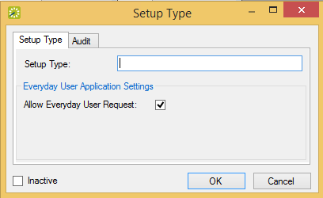

Setup Types Window

A setup type is the physical layout or arrangement of a room (e.g., classroom, conference, theater-style, rounds of 6, as-is, etc.). Setup types predefine rooms for a smoother booking process. Although configuring setup types is not required, setup type is used for defining the capacity for a room, which is helpful information for the staff at your organization who prepare rooms for an event. Also, when you configure a room, you can note, by setup type, the capacity for the room. When searching for available space, your users can use setup types and capacities to filter their search results.
Setup Types Window
Tip: Optionally, to view all setup types in your EMS database, regardless of status, under Show, click Inactive.
Setup Type Dialog
